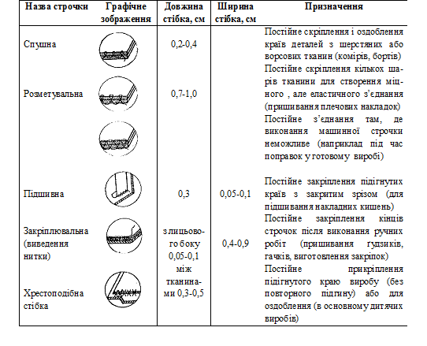

Потайний підшивний стібок (Рис. 14, а) застосовують для прикріплювання деталей до основної тканини, для з'єднування деталей підкладки між собою і т. д. Під час виконання потайного стібка голкою захоплюють тільки частину товщини основної тканини і край підкладки, роблячи проколину основної тканини і підкладки за один прийом. Наступну проколину роблять позаду першої на відстані 0,1 см від виходу голки. Петлеподібні стібки малопомітні і з боку підкладки. Нитки для стібків підбирають тонкі, під колір тканини підкладки, голки № 2-4.
Зшивний стібок(Рис. 14, б) призначений для постійного скріплювання деталей, і застосовують його в тих випадках, коли виконання машинної строчки утруднене або коли треба мати шов підвищеної розтяжності, наприклад, при з'єднуванні кінців коміра з підбортами, правої та лівої половинок штанів та ін. Спочатку стібок виконують та само, як прямий, потім голку вводять в попередню проколину, далі, роблячи наступну проколину тканини знизу вгору, повертають голку на поверхню тканини. Довжина стібка на вивороті вдвічі більша, ніж на лицьовому боці. Наступна проколина тканини повинна бути в точці виходу голки на поверхню тканини при попередній проколині. В результаті повторення проколин голки утворюється суцільний ланцюжок стібків, які щільно прилягають один до одного. На 1 см строчки припадає 3-4 стібки.
Розметувальний стібок (Рис. 14, в) застосовують для розметування пройм виробу, коли треба мати строчку підвищеної розтяжності. Розметувальний стібок за своєю будовою нагадує зшивний. Відмінність полягає в тому, що верхня нитка попереднього розметувального стібка знаходиться на деякій відстані від верхньої нитки наступного стібка. Довжина стібків дорівнює 1-1,5 см.
Оздоблювальний (розпушувальний стібок) (Рис. 14, г) застосовують для з'єднання та ущільнювання країв деталей при виготовленні костюмів з шерстяної тканини. Цей стібок за своєю будовою є різновидом зшивного стібка. Відмінність полягає в тому, що довжина оздоблювального стібка на лицьовому боці й на вивороті виробу дуже мала (0,05-0,1 см), завдяки чому нитки сховані всередині скріплюваних тканин. На 1 см строчки припадає 3-4 стібки.
Строчки петле- і хрестоподібного стібка
Петельні стібки

Петельний стібок (Рис. 15) застосовують для обкидання петель на костюмах, пальтах, інших виробах. Для міцності та стійкості петлі і надання опуклості її краям на відстані 0,1-0,2 см від краю прокладають міцну нитку (простилку), по якій розміщують стібки. Всі проколини тканини треба робити на однаковій відстані одну від одної й від краю; натяг нитки повинен бути однаковим; стібки треба розміщувати так густо, щоб вони повністю покрили край тканини. Частота стібків залежить від номера ниток і становить 12-15 стібків на 1 см строчки. В кінці петлі ставлять закріпку довжиною 0,3-0,4 см впоперек розрізу петлі. Закріпка служить для скріплювання кінців кишень і петель. Довжина закріпки може бути 0,3-1,5 см. Її виконують машинним або ручним способом. При ручному способі прокладають 2-3 поздовжні нитки, які потім обкидають. На 1 см строчки припадає 7-10 стібків.